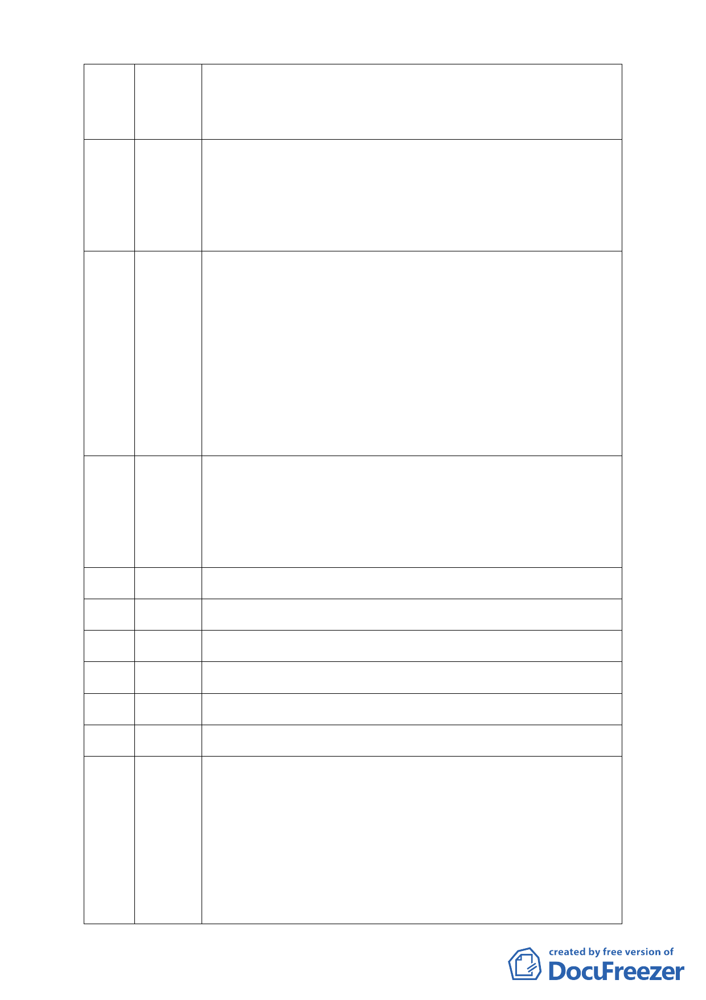

實在是很可疑。為何選舉期間社區裡有很多謠言說此區是山坡地
並發放黑函，真是莫名其妙。內湖從有捷運以來很多人希望在此
蓋豪宅，請政府不要屈服於惡勢力。請真正的內湖人一起來支持
此案。
本人是大湖里民，到此向各位報告三無一成，第一無：若市府要
96 黃桂玲 徵收此地回復為湖泊，則本人無意見。第二無：接獲傳單說慈濟
（林昭元代） 要在此蓋醫院，惟臨近三總、康寧等醫院林立，故本區無需再蓋
醫院。第三無：說慈濟將蓋 2 棟高樓約 20 層高，本人亦不贊成。
最後，慈濟若在此大湖旁興建一有特色的地標與聚會所，則本人
舉雙手贊成。
一、以在地居民身份表達全力支持慈濟改建計畫方案之通過。因
97 項乃華 從 921 地震慈濟認養 50 多間學校之品質及莫拉克風災高雄三菱村
（江先生代） 永久屋之興建品質，以及全世界 70 多個國家對慈濟的認同，相信
慈濟會將內湖園區的改建做的更好也符合環保綠建築之標準，更
能改善目前鐵皮屋之破爛景象，建設後對內湖對台北市乃至於全
國絕對有加分效果。
二、民主真諦在包容不同的意見和聲音，對綠黨理念也尚表贊同，
惟套ㄧ句阿扁的話：慈濟改建，甘有這麼嚴重嗎？一個平地改建
案竟然利用黑函等造成居民人心惶惶。造成反對應該是有很多的
誤解，希望這些朋友有機會來了解ㄧ下，也希望慈濟能更公開的
說明，委員能憑良知審理此案。
我認為本案從公文的來回、從法令上的評估，相信在座委員都很
98 陳銘烜 清楚，但在過程中發覺正反兩方落差這麼大，真相是什麼？一個
（曹世政代） 小案似乎快成為一個政治問題。據了解所有工程中慈濟對工程要
求的標準都高過政府的標準，這代表上人對品質的要求，故要懇
求大家認真去思考，因為真理只有一個，否則會對大家都造成傷
害。這部份就請各位委員專家用你們的睿智來還原真相。
99 （已刪除）
100 （已刪除）
101 （已刪除）
102 （已刪除）
103 （已刪除）
104 （已刪除）
內湖不僅湖大福氣也大，因為有如此多的人在關心此土地、也有
105 黃勝枑 那麼多的人在做公益，個人對雙方面的沒有否認。個人認為此福
份是被一個動詞與一個名詞所掩蓋，那就是「開發」和「保護區」，
因「開發」加上「保護區」大家就都認為不可，惟本案並非帝寳
也非某某山莊，保護區也有允許使用項目，且慈濟依法依規定申
請，又怎會有程序問題，即全案依法審查就是了。剛才有人說本
案非工程與技術的問題，難不成是意圖的問題？果真是意圖問題
可就難以解釋的清楚的了。建議各位委員慈濟依法申請大家依法
審查即是。個人希望慈濟仍能繼續在此存在並發揚光大，創造更
- 14 -